Type | Model | χ² | df | CFI | TLI | RMSEA | Δχ² | Δdf | ΔCFI | ΔRMSEA | p | Decision |
|---|---|---|---|---|---|---|---|---|---|---|---|---|
Country | 1. Configural | 25,808 | 946 | 0.980 | 0.975 | 0.082 | ||||||
2. Metric | 29,119 | 1,135 | 0.978 | 0.977 | 0.080 | 3,311 | 189 | < -0.004 | < 0.05 | < 0.01 | Yes | |
3. Scalar | 38,640 | 1,555 | 0.971 | 0.977 | 0.079 | 9,521 | 420 | -0.007 | < 0.01 | < 0.01 | No | |
Gender | 1. Configural | 19,559 | 86 | 0.981 | 0.975 | 0.073 | ||||||
2. Metric | 20,092 | 95 | 0.980 | 0.977 | 0.071 | 534 | 9 | < -0.004 | < 0.05 | < 0.01 | Yes | |
3. Scalar | 21,966 | 115 | 0.978 | 0.979 | 0.067 | 1,874 | 20 | < -0.004 | < 0.01 | < 0.01 | Yes |

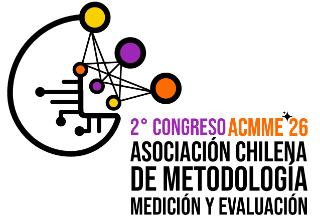
Midiendo la Autoeficacia Digital en Evaluaciones Internacionales a Gran Escala: Una escala comparativa bidimensional entre ICILS y PISA
Daniel Miranda, Ismael Aguayo, Nicolas Tobar, Tomás Urzúa y Juan Carlos Castillo
Universidad de Chile y Núcleo Milenio de Desigualdades y Oportunidades Digitales.
Segundo Congreso Internacional de la Asociación Chilena de Metodología, Medición y Evaluación, La Serena, Chile. 07, 08 y 09 de enero 2026
Punto de partida
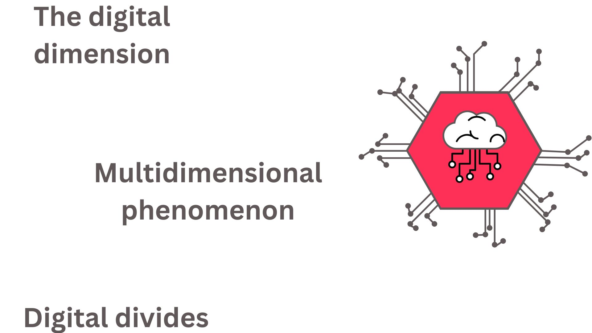
Autoeficacia digital
“… expectativas sobre las propias capacidades para aprender y realizar tareas en tecnologías y entornos digitales, es uno de los componentes principales para promover la formación de competencias digitales” (Ulffert-Blank & Schmidt, 2022).
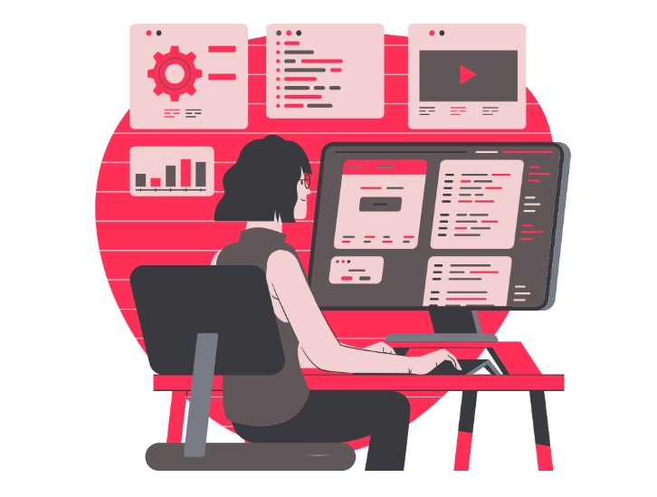
¿Autoeficacia digital bidimensional?
Un concepto en evolución: Computacional -> Internet -> TICs
En los últimos años las TIC se han dividido en dos tipos de autoeficacia: general y especializada.
Estudios internacionales operacionalizan la autoeficacia digital de manera unidimensional y bidimensional
Medición de autoeficacia digital
Hay dos principales estudios a nivel internacional que han medido la autoeficacia digital
International Computer and Information Literacy Study (ICILS): autoeficacia bidimensional
Programme for International Student Assessmentent (PISA): autoeficacia unidimensional
Desafíos para la comparabilidad entre: estudios, países y género
¿Es posible establecer un modelo de medición equivalente de autoeficacia digital bidimensional en ICILS y PISA?
¿Es el modelo bidimensional de Autoeficacia Digital equivalente por género y entre países?
¿Qué diferencias de género existen en la Autoeficacia Digital entre países?
Hipótesis
- \(H_{1}\): Es posible identificar dos dimensiones latentes de la autoeficacia digital (general y especializada) en PISA 2022 e ICILS 2023.
\(H_{2}\): El modelo de medición bidimensional de la autoeficacia digital es equivalente entre países.
\(H_{3}\): El modelo de medición bidimensional de la autoeficacia digital es equivalente entre niñas y niños.
\(H_{4}\): El DSE general y el especializado muestran patrones distintos de asociación con el género y el contexto nacional.
Método
Participantes
Estudiantes de 22 países compartidos.
ICILS 2023 (n≈91.000).
PISA 2022 (n≈183.000).
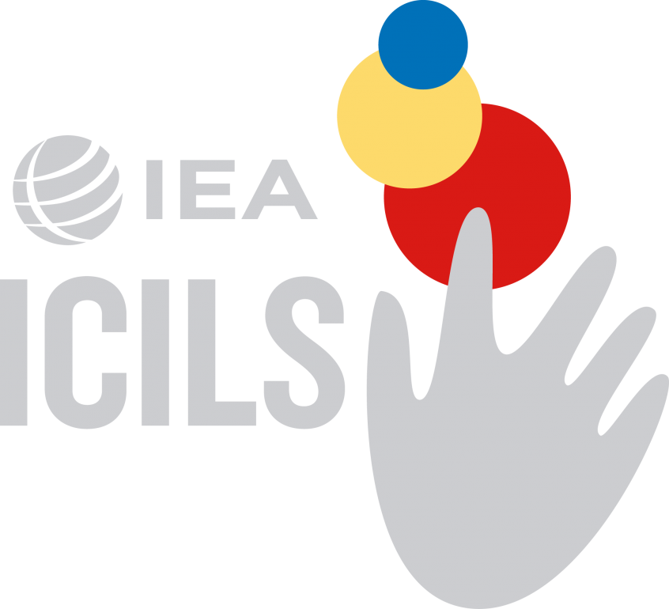
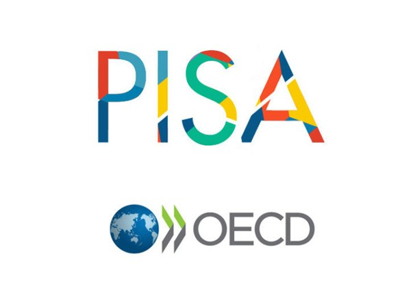
Medidas
ICILS: ¿Qué tan bien puedes hacer…?
PISA: ¿En qué medida eres capaz de hacer las siguientes tareas al usar
Autoeficacia General
ICILS: 10 ítems; PISA: 8 ítems
Buscar y evaluar información en línea.
Compartir contenido en línea.
Escribir o editar textos.
Crear una presentación multimedia.
Autoeficacia Especializada
ICILS: 3 ítems; PISA: 6 ítems
Desarrollo de sitios web.
Programación.
Razonamiento computacional.
Más información: acá
Estrategia analítica
Análisis factorial confirmatorio y re-especificación
Invarianza entre países y por género (CFA multigrupo)
Diferencias por país y por género
Resultados
- Modelo de medición
- Pruebas de invarianza
- Distribuciones de medias entre países
- Diferencias de género entre países
Modelo ICILS
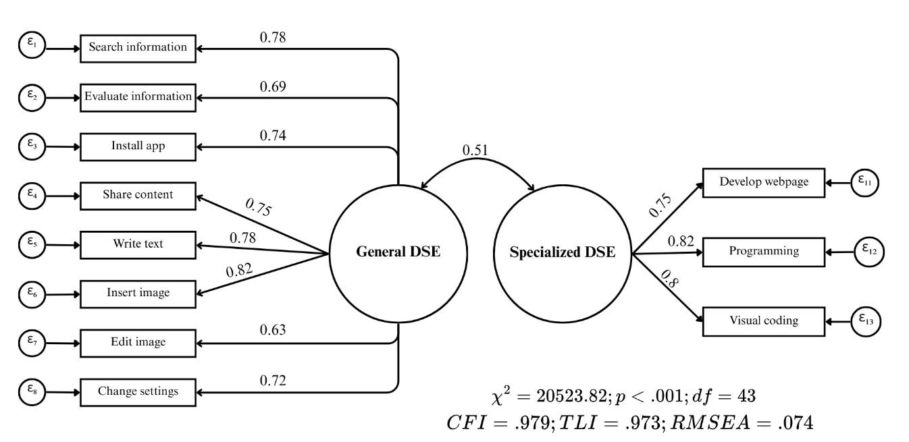
Modelo PISA
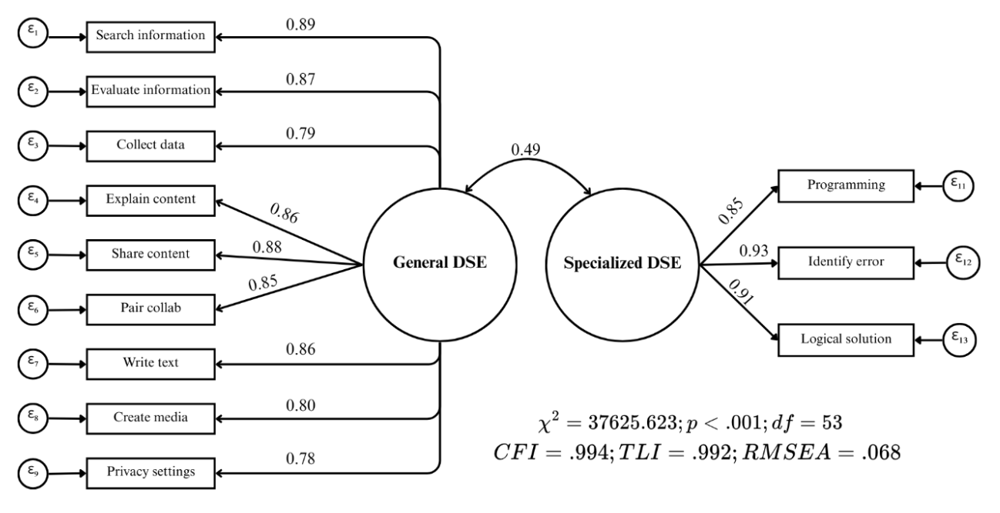
Invarianza ICILS
Invarianza PISA
Type | Model | χ² | df | CFI | TLI | RMSEA | Δχ² | Δdf | ΔCFI | ΔRMSEA | p | Decision |
|---|---|---|---|---|---|---|---|---|---|---|---|---|
Country | 1. Configural | 48,796 | 1,166 | 0.994 | 0.992 | 0.077 | ||||||
2. Metric | 53,756 | 1,376 | 0.993 | 0.993 | 0.074 | 4,960 | 210 | < -0.004 | < 0.05 | < 0.01 | Yes | |
3. Scalar | 55,077 | 1,838 | 0.993 | 0.995 | 0.065 | 1,322 | 462 | < -0.004 | < 0.01 | < 0.01 | Yes | |
Gender | 1. Configural | 37,986 | 106 | 0.994 | 0.992 | 0.069 | ||||||
2. Metric | 39,415 | 116 | 0.994 | 0.993 | 0.067 | 1,429 | 10 | < -0.004 | < 0.05 | < 0.01 | Yes | |
3. Scalar | 39,078 | 138 | 0.994 | 0.994 | 0.061 | -337 | 22 | < -0.004 | < 0.01 | 1.00 | Yes |
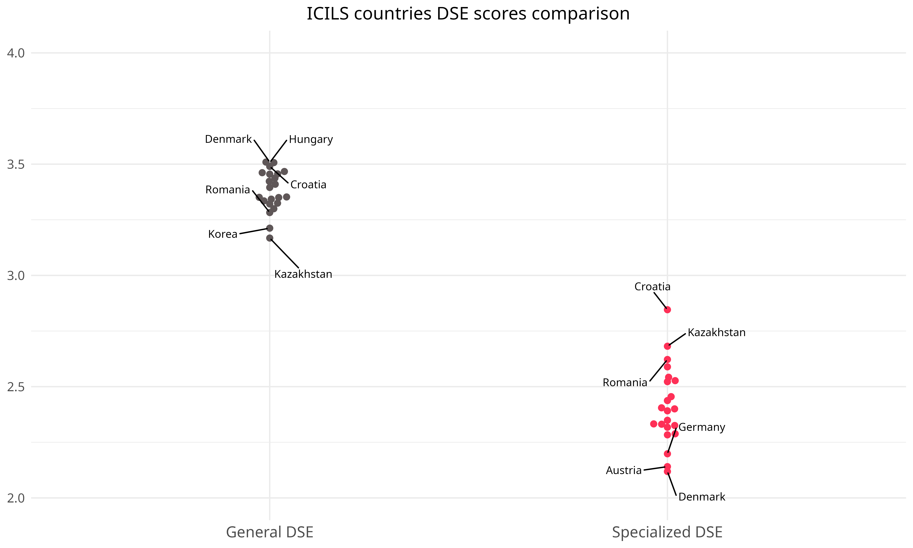
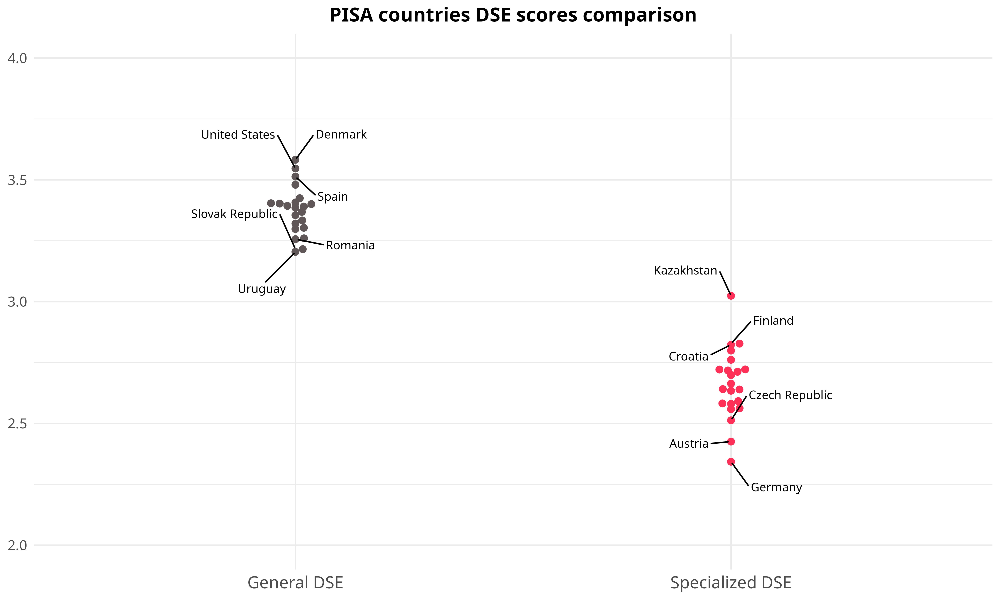
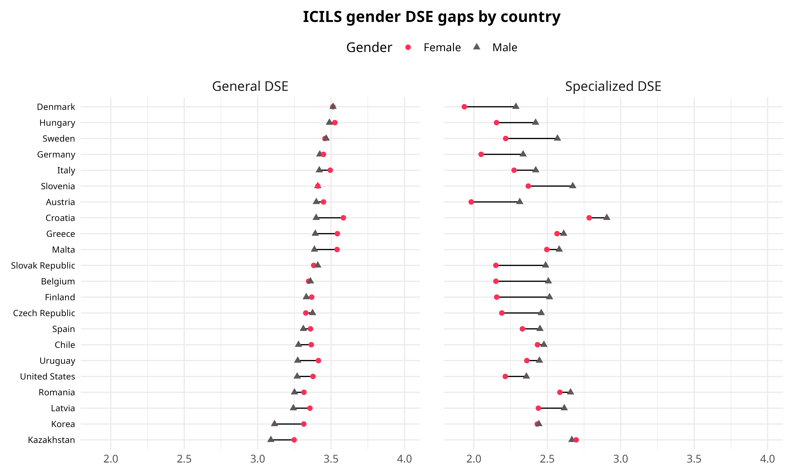
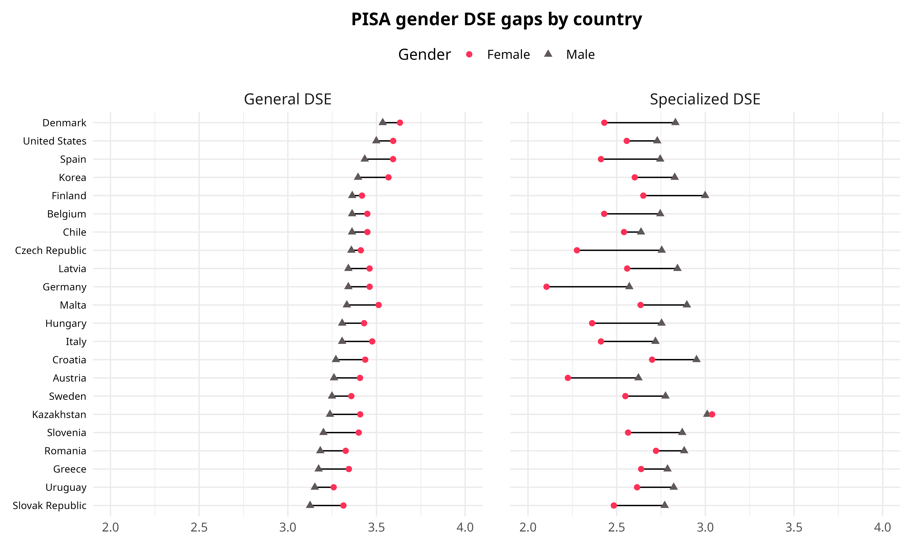
Conclusión
¿Es posible identificar un modelo bidimensional en ICILS y PISA?
- Sí, pero con menos ítems de los propuestos por ambos estudios.
¿El modelo bidimensional de autoeficacia digital es equivalente entre géneros y países?
- En PISA, sí; en ICILS, sólo a nivel métrico.
¿Qué diferencias de género existen en la autoeficacia digital entre países?
- Las mujeres tienen ventaja en autoeficacia general, mientras que los hombres en autoeficacia especializada.
Discusión
¿Hay una, dos o más dimensiones?
La relación contraintuitiva entre desarrollo de los países y la brecha de género
Siguientes pasos
¿Qué factores a nivel macro pueden explicar las diferencias en autoeficacia digital y la brecha de género?
¿Qué ocurre en países desarrollados/ en desarrollo?
¡Gracias!
- Repositorio GitHub del proyecto: https://github.com/milenio-nudos/picils_dse
Anexo
Ítems eliminados
- Manipulación multimedia
- Búsqueda de fuentes de información
- Configuraciones de privacidad
- Selección de aplicaciones.